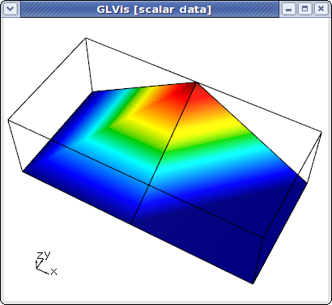
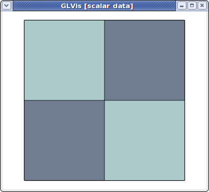
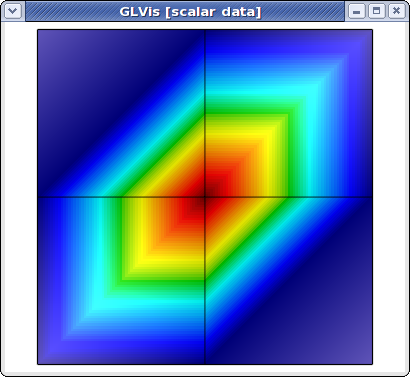
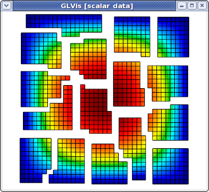

Parallel Visualization
Summary
Description of the parallel visualization capabilities of GLVis.
Details
GLVis supports visualization of parallel meshes and grid functions, which are either saved in separate files or send through separate socket connections from each processor. In both cases, GLVis will stitch the parallel results to show the global mesh and solution, but the subdomain data can still be examined through the F3/F4, F8, F9/F10 and F11/F12 keystrokes.
For data saved in separate files, e.g. mesh.000000, ... , mesh.000003 and sol.000000, ... , sol.000003 from a run on 4 processors, the format is:
glvis -np 4 -m mesh -g sol
In other words, the actual mesh and solution file names are obtained from the above prefixes "mesh" and "sol" by appending "." followed by a 6-digit processor/subdomain number padded with 0's, see e.g. this example. (Note that the related obsolete option -par3d was removed in version 2.0).
For results send by separate socket connections from each processor, the parallel format just adds a prefix specifying the total number of processors and the current processor id:
parallel <num_proc> <myid>
An example of this can be found here.
To illustrate the parallel visualization capabilities of GLVis, suppose that we have solves a simple Poisson problem on a 2x2 square grid using 2 processors. The processor mesh files generated, e.g. by MFEM's Parallel Example 1, are "mesh.000000":
MFEM mesh v1.0
#
# MFEM Geometry Types (see mesh/geom.hpp):
#
# POINT = 0
# SEGMENT = 1
# TRIANGLE = 2
# SQUARE = 3
# TETRAHEDRON = 4
# CUBE = 5
#
dimension
2
elements
2
1 3 5 2 0 3
1 3 4 5 3 1
boundary
6
1 1 0 3
1 1 1 4
1 1 2 0
1 1 3 1
2 1 5 4
2 1 2 5
vertices
6
2
1 1
0 1
1 0.5
0.5 1
0 0.5
0.5 0.5
and "mesh.000001":
MFEM mesh v1.0
#
# MFEM Geometry Types (see mesh/geom.hpp):
#
# POINT = 0
# SEGMENT = 1
# TRIANGLE = 2
# SQUARE = 3
# TETRAHEDRON = 4
# CUBE = 5
#
dimension
2
elements
2
1 3 0 2 5 4
1 3 2 1 3 5
boundary
6
1 1 0 2
1 1 1 3
1 1 2 1
1 1 4 0
3 1 5 4
3 1 3 5
vertices
6
2
0 0
1 0
0.5 0
1 0.5
0 0.5
0.5 0.5
The corresponding linear (Q1) finite element solutions on each processor are, "sol.000000":
FiniteElementSpace
FiniteElementCollection: Linear
VDim: 1
Ordering: 0
0
0
0
0
0
0.09375
and "sol.000001", which happens to be identical to "sol.000000" in this case.
As before, we can view the local mesh and solution on each processor by specifying its mesh and solution files:
glvis -m mesh.000000 -g sol.000000

However, we can also view the global (stitched) mesh by specifying the number of processors, and the mesh prefix
glvis -np 2 -m mesh

The global parallel mesh and solution can be visualized with
glvis -np 2 -m mesh -g sol

and now we can use, e.g. the F11/F12 keystrokes to shrink/zoom the subdomains corresponding to different processors. Here is what the result looks like for a refined version of this problem on 16 processors:

Parallel meshes and solutions are also supported in GLVis scripts. The corresponding command is
psolution <num_proc> <mesh_prefix> <attr_flag> <solution_prefix>
where "<attr_flag>" controls if the boundary attributes should be replaced with the processor number or if they should be kept unchanged. This option is also available from the command line as "'-a'".